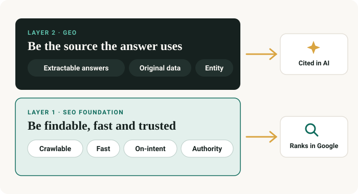

SEO vs GEO: what changes when search gives answers instead of links
GEO (Generative Engine Optimisation) is the practice of making your content easy for AI answer engines to understand, trust and cite. It doesn't replace SEO, because AI systems still lean heavily on content that is crawlable, well-structured and authoritative. But it shifts the goal from ranking a page to being the source an answer is built from.
What is GEO?
Search increasingly returns an answer rather than a list of links. Google's AI Overviews, ChatGPT search and Perplexity all read multiple sources, summarise them and often cite where the information came from. Generative Engine Optimisation is the work of making sure your brand is one of those sources.
For a marketer, that changes the question from "where do we rank for this keyword?" to "when someone asks about this topic, does the answer mention us, and is it accurate?"

What stays the same?
- Crawlability and speed still matter. If a page can't be fetched and read reliably, it can't be ranked or cited.
- Search intent still matters. The best content answers the real question someone is asking, completely.
- Authority still matters. Content from credible, clearly identified experts is more likely to be trusted by people and by machines.
What changes with GEO?
1. Answers need to be extractable
AI systems pull out passages, not whole pages. Put a clear, direct answer near the top, use descriptive headings, and keep each section focused on one idea so it still makes sense when quoted on its own.
2. Original information is a competitive advantage
If ten pages say the same thing, any of them can be summarised. If you publish something only you have – survey results, salary data, a framework from real client work – you become the source worth citing.
3. Your brand needs to be an unambiguous entity
Be consistent about who you are and what you do across your website, LinkedIn and other profiles, and use structured data (schema markup) so machines can connect the dots.
4. Visibility is measured differently
Rankings and clicks don't tell the whole story when the answer appears on the results page. Regularly test the questions your audience asks in AI tools and track whether, and how, your brand is mentioned.
A practical GEO checklist
- Answer the core question in the first two or three sentences.
- Use question-style headings that match how people actually ask.
- Add original data, examples or expert commentary that can't be found elsewhere.
- Name the author and show why they're credible.
- Add relevant schema markup (Organization, Person, Article).
- Keep key pages fast, crawlable and up to date, and show the date.
- Check monthly how AI tools describe your brand and your topic.
FAQ
Is GEO replacing SEO?
No. GEO builds on SEO. Most of what makes a page rank (relevance, quality, authority, technical health) also makes it more likely to be used in an AI answer.
Is GEO the same as AIO?
The terms overlap. "AIO" is used both for AI Optimisation in general and for Google's AI Overviews specifically. GEO is the broader term for optimising for any generative search experience.
Where should a business start?
Start with the questions your customers ask most. Check what AI tools currently say in response, then create or improve the single best page that answers each one.

Johnny Lim is a Singapore-based digital marketing manager specialising in SEO and Generative Engine Optimisation. More about Johnny · LinkedIn